2000.05.28–30 河内スタヂオ録音
Delivery
北村英治 & 宮之上貴昭北村英治 (cl) / 宮之上貴昭 (g)
「純正・無添加、一切の作意的な処理を否定したピュアな高純度のレコーディング。」stereo 11月号
About the Album
作品紹介
「Delivery」
Eiji Kitamura, Yoshiaki Miyanoue
北村英治（クラリネット）
宮之上貴昭（ギター）
2000年5月28～30日
河内スタヂオ録音
発売元: JAZZ COOK
￥３，０００
（CD代、税込み）
購入先はこちら>>>北村英治HP
・カーニバルの朝 ・僕はセンチになって ・我が心のジョージア ・バードランドの子守唄 ・モナ リザ ・古い十字架 ・素敵な貴方
・小さな花 ・ディア シドニー ♪If you still want me （宮之上貴昭オリジナル曲 238kb） ♪Mathilda (北村英治オリジナル曲 339kb)
・ウェル ユー スティル ビー マイン ・そして天使は歌う ・いそしぎ ・グッド バイ ・麗しのロスマリン
河内伸介
Jazzに取り憑かれ、ブルーノートやコンテポラリーのサウンドに魅せられ自分も録音してみたくなり、長年の夢だった録音スタジオを自宅に作ってしまいました。
録音しないときはリスニングルームとして使うため、「無線と実験」でおなじみの金田明彦先生に残響時間の計算をしていただき、響きの綺麗なスタジオを目指しました。自分では大変満足しています。
そんな中、なんと北村英治さんと宮之上貴昭さんがうちのスタジオを使ってくださる・・・
このレコーディングは２人のごきげんなサウンドに、私は何もしないでありのまま録るのが一番良いと思い、この３日間は、レコーディングしていることも忘れて楽しませてもらいました。
その結果、何度聴いても飽きない、すばらしいCDが出来たと思います。
私はこんな素晴らしい人たちに巡り会えてとても幸せです。本当に有り難うございました
北村英治
「いつでも、何処でも、生演奏を披露できたら楽しかろう」
と思いついたのが、ミヤとのデュオでした。
大阪城野外コンサートでも、たった２人でやり仰せたので、すっかり気持ちが良くな帰りの新幹線の中でレコーディングを企てました。
タイトルは 「音の出前」と云うつもりで「Delivery」にし、「出前」と云うわけでリクエストの多い曲を中心に選びました。
レコーディングはミヤの友人に頼もうと、その場で電話をし、超スピードで全てを決めてしまいました。
ジャケット用にレコーディングをした大潟村のどこまでも平らでのんびりとした風景を描いてみました。
ミヤ、河内さん、敬子さん、堤さん、田中さん、ありがとう！
宮之上貴昭
スイングの名手、北村さんとデュオのレコーディングだ！
僕はスウィングスタイルに合わせることなく、普段通りに演奏しました。
「デュオ」のフォーマットにあって「普通」にならない緊張感が欲しかったからです。
予想通り、ほのぼのとした雰囲気の中にも、スリルが感じられる作品になりました。
最高にリラックスできる「河内スタヂオ」を北村さんに強く推薦したことも、どうやら大正解だったようです。
とても楽しみながらレコーディングすることができました。
ステレオ [１１月号]
にてDelivery がCD優秀録音jazz部門最高得点総合点9.8.点をいただきました。
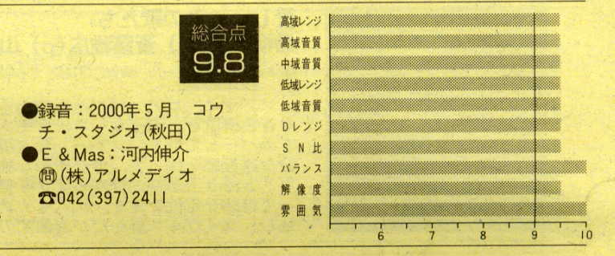
アコスティック・ギターとクラリネットのシンプル編成のデュオ・アルバム。
クリーンなスタジオの空間の中に程よい遠近感で自然な姿のクラリネットとギターの音像がすっきりと定位する。
純正・無添加、一切の作意的な処理を否定したピュアな高純度のレコーディング・パターンである。
再生装置のチューニングに好適なアルバム。（ステレオ11月号）
Recording Report
レコーディングレポート
北村英治＆宮之上貴昭デュオレコーディング
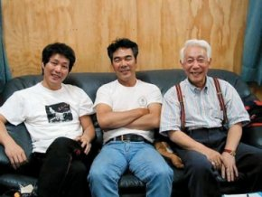
前回、宮之上貴昭さんが河内スタヂオで録音したC.D.「ミー・マイセルフ＆アイ」を気に入った北村英治さん、これにクラリネットが乗っかったら緊張感の溢れるデュオが可能になる、という考えで実現したのが今回のレコーディングです。
今まで100枚以上もアルバムを出されている北村英治さんです。「これからレコーディングに行ってきます。」「どちらでレコーディングですか？ロスですか、ニューヨークですか？」「秋田です。」
「えっ？秋田！？？？？・・・」
かくして、夢のような３日間が始まりました。
2000,5/28
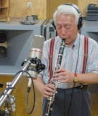
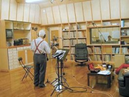
東京１１時発の秋田新幹線「こまち」は３時過ぎに秋田に到着。
河内伸介の運転するバンで大潟村に向かった。だんだん閑散としてくる風景に北村さんの表情が「本当に大丈夫なのかな」と言った顔に変わっているのがわかる。「秋田に、とてもいいスタジオがあるんですよ。」と言った手前僕にも責任がある。
１時間ほどして河内スタヂオに到着。先ずはスタジオの見学。
「おおっ！ これはすごい。いいよー ここ」の北村さんのため息にも似た言葉に、先ほどの心配はふっとんだ。
同時に、「この機械やマイクロフォンすごいでしょう！ブースもあってさ。残響も０．７秒にしてあるんですよ」とまるでマイ・スタジオ気取りの僕。
そばのホテルにチェックインするも、「早くやろう」の北村さんの意気込みにタジタジになり、３０分もしないうちに指ならし、そして録音の開始となった。
あまり難しくない曲から収録し、夕食の時間。ここは大潟村。村にはつい最近出来た信号１つを加えても、２つしかない。
そんな田舎なので、レストランはあっても独占企業。食通で知られた北村さんに喜ばれる食事はあまり手の掛からない日本海の海の幸が一番と、本鮪（ホンマグロ）や鮃（ヒラメ）,真鯛（マダイ）の刺身を河内家で用意。
管理人Ｋは実は実家が中華料理店だった事もあって、餃子や春巻きも用意して、中華の隠れ鉄人の味を提供すれば、大の中華ファンの北村さんはもうホクホク顔。地元の味「蓴菜（ジュンサイ）」でしめて、この上ない豪華で美味しい夕食となった。この夕食をパワーにして、初日というのに、サウンドチェックを含めて、４曲収録することが出来ました。 お疲れさま（宮之上貴昭）
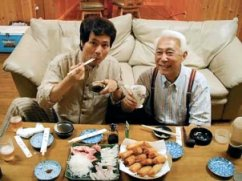
世界的クラリネット奏者である北村英治さんと宮之上貴昭さんのレコーディングを控えて河内家は緊張していました。
河内伸介は何日も前から録音機材のチェックに余念がありませんでした。
北村さんに気に入ってもらえる録音ができるだろうか？ ご自身のホームページで料理のコーナーまで もっておられる料理通の北村さんに どんな料理を出せば喜んでもらえるだろうか？ そんな不安も実際に北村さんにお会いしてみると、どこかに吹き飛んでしまいました。とっても気さくで、素敵なおじさまでした。
にこにこと笑いながら「僕は、決してグルメなんかじゃないから」 とおっしゃって、何でも食べてくださいました。 あの温かいお人柄は 周りの人を皆幸せにしてくれます。
5/29
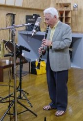
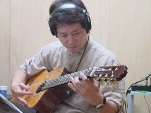
この日は朝からいい天気。僕は大潟村へ来るときはいつも「ホテル河内」に宿泊されてもらうのだけど、始めてホテル「サンルーラル」に泊まりました。いくら気心が知れてる河内君とはいえ、やっぱり気を使うから、ホテルに滞在して正解！少しウソ。
午後から録音開始。今日は目一杯録音する予定だ。僕と北村さんのオリジナル曲２曲も収録した。北村さんの曲はとても幻想的なムードの曲で「マチルダ」というタイトルが付いていた。フランスの名優ジャン・レノが主演した映画「レオン」に出てた１２才の女の子の名からタイトルを付けたという。ふふ～ん。カッコ良すぎる！
僕のオリジナル曲にはまだタイトルを付けていない。そーだ。僕も映画からタイトルを付けよう対抗して。ジャン・レノと言えばアメリカ版「ゴジラ」にも出てたから・・・ 違う違う！ イメージ違う。ジャン・レノにこだわらず女優で行こう。好きな女優は・・・ 深田恭子で「Fukakyon」ますます悪くなっていく。何も映画女優にこだわって対抗しなくてもよかったのであった。ハハ。
曲名未定のまま録音はどんどん進行した。今回のレコーディングも曲によってガットギターを使用したり、音をかぶせて録音したりと、マルチ録音の有利な条件を十分に活用した。それだけに音の幅の広がりはクラリネットとギターだけとは思えないほど豊かになっている。
それにしても元気な北村さん。テラスバーベキューの夕食後も大いにやる気漫々で録音再開。この日さらに８曲程収録し終えて、時計の針が１１時を回った頃、僕の左手首が限界に近づいた。
考えてみれば、イントロからクラリネットソロ、そしてギターソロ、全部弾きっぱなしだ。曲によってはテイク７まで行ったので、手首がかなり痛くなってきた。
「北村さん、もう僕ダメです。」とギブアップを告げ、この日の録音は終了した。（宮之上貴昭）
北村さんと宮之上さんがスタジオ入りをしている間に同行したデザイナーの鵜飼さんは大潟村の風景を撮影しました。
広大な大潟村を写真に撮り それを元にして北村さんがジャケットの絵を描くそうです。撮った写真を見せてもらってちょっとビックリ。
羊がいて、まるで外国のようでした。やっぱりプロの方って 見るところが違うんですね。素敵な大潟村を再認識
5/30
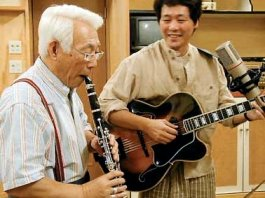
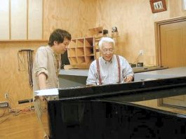
朝起きてテレビをつける。NHKに熱田修二（ｔｐ）が出演している。
「トランペットの音の秘訣は食にあり」というものだ。
NHKだから今度出る僕とのCDの宣伝をおおっぴらに出来ないのが残念だが、彼は会社をやってるので経済効果はきっと大きかった事だろう。会社でたくさん稼いで僕に費やしてね。
ポンと言ったものの左手首がまだ痛くって、このホテルの隣にある温泉「ポルダー潟の湯」に朝から一人で行く。
前回も手首が痛くなった時に魔法のように効果があった温泉だ。他の効果はよくわからないけれど、とにかく手首には効くのだ。こうしてゆっくりと湯に浸りケアに専念した。
今日は録音最終日。昼からABS秋田放送の取材が来た。
先づ、北村英治と宮之上貴昭が大潟村にいる事の証明の「絵」がほしいという事で、僕はトラクターの上に２人で乗っている、又は麦わら帽子をかぶって田植えをしている「絵」を提供しようとしたけれど、そこまでやらなくてもいい、という事で、羊のいるところを河内伸介と３人で歩いている「絵」を、そしてスタジオの録音風景とインタビューを撮った。全国放送されないのが残念です。
昨日までにずいぶん録音し終わっていたので、残り４曲の収録はスムーズに行われた。手首も大丈夫！
かくして、全てレコーディングが終了し、プレイバックに耳を傾ける。
「これ、カナリ いいよ！いけるよ！」と満足げな北村さん。
この河内スタジオでなければ、絶対に撮れなかったこの音に僕も大満足し、「紹介して本当に良かった」と胸をなでおろしました。
このCD「Delivery」は１０月中に「Jazz Cook」 レーベルより発売されます。
乞ご期待！（宮之上貴昭）
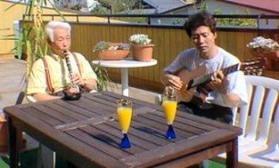
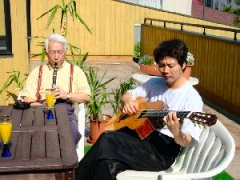
買い物から戻ってみると、素敵な音楽が聞こえてきます。
スタジオの窓が開いてるのかしら？と思いながら２階に上がり、ふと テラスを覗くとお２人が楽器をもって・・・。CDのジャケットの為の撮影だったのですが、実際に楽器を弾かれてました。ものすごく素敵な演奏でした！
CDのタイトル Delivery (音楽の出前）まさにそのものです！北村さん宮之上さん有り難うございます。
番外編 北村風「蟹とはるさめの煮込み」
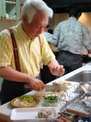
先ずは蟹をぶつ切り
ねぎ・生姜・香菜（コリアンダー）を細かく切る。
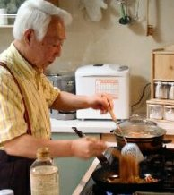
フライパンに油を熱し、生姜・ねぎ・蟹の順に入れ炒め、蟹に火が通ったら香菜も入れ、紹興酒・醤油で味付けし、お湯でもどしたはるさめを加え、かき混ぜ ながら煮込む。
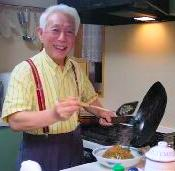
仕上げにごま油を加えサッと混ぜたら出来上がり！
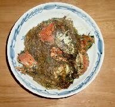
北村風「蟹と春雨の煮込み」
北村さんが１品作ってくださいました。 みそ汁にしようと思ってた蟹がおしゃれな中華料理になりました。
河内スタヂオに 来るmusician の方々は 宮之上さん 熱田さん 北村さんと 料理人が多いですね。不思議！
◆インタビュー
北村英治さん、宮之上貴昭さん、河内伸介へのインタービュー
ABS 秋田放送で放送されなかった部分も全て載せております。
デュオ・ レコーディング 河内スタヂオにて
北村英治ホームページ http://eijikitamura.com/
宮之上貴昭ホームページ http://miyanoue.net/